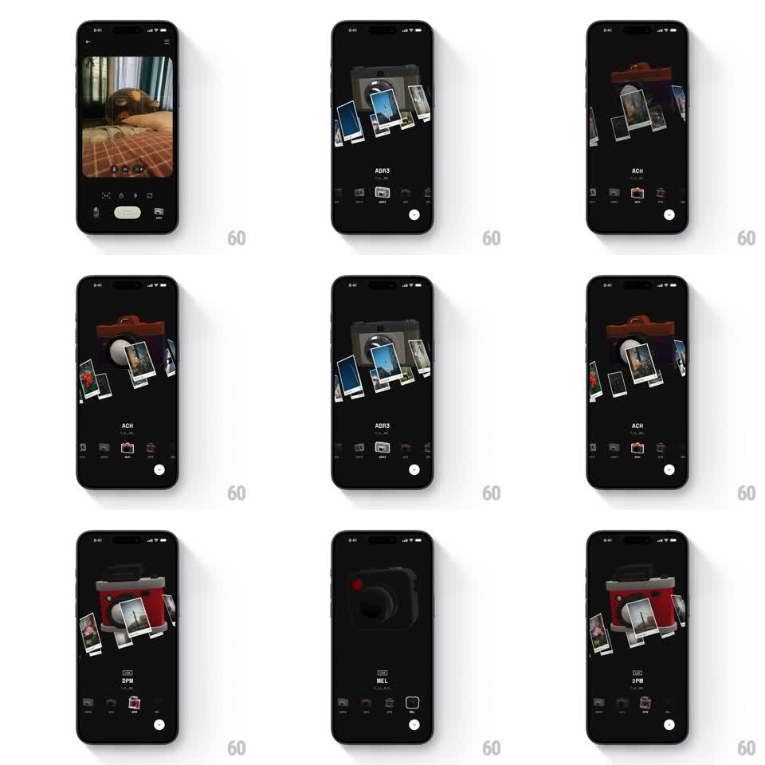

Media
Frame-by-frame

Rebuild this interaction 1:1: Binsoo's filter spin - swiping through filter presets rotates a 3D camera model (red DPM, grey ADR3, boxy BEL) to a new angle while its floating polaroid previews orbit and swap with it.

Rebuild this interaction 1:1: Binsoo's filter spin - swiping through filter presets rotates a 3D camera model (red DPM, grey ADR3, boxy BEL) to a new angle while its floating polaroid previews orbit and swap with it.
## Integration
Integration: stack-agnostic spec - springs given as stiffness/damping, timed motions as duration + curve; map every value to your framework and animation library of choice.
## Scene
Dark camera-detail screen entered from a capture UI: a 3D camera model center, 3-5 polaroid previews floating in an arc around it, the filter/preset name ("DPM", "BEL") with a subline below, a bottom preset row, and a shutter button.
## Motion spec
Pattern: swipe-driven 3D spin linking camera model and orbiting previews.
- Horizontal swipe rotates the whole rig: camera turns on Y (follows finger 1:1 while dragging, ~1.2x rotation gain) and the polaroid arc swings in the same direction with perspective depth.
- On release, velocity carries into a decaying flick that snaps the camera to the nearest preset angle (spring ~240/16, one overshoot).
- The polaroids nearest the camera trade places with a swap shuffle (scale down 0.8, arc out, new ones arc in, 400ms staggered 60ms).
- Preset name crossfades with a 6px vertical drift (200ms); bottom row indicator slides with the snap.
## Calibration
- Dragging feels physical: the rig has inertia and the snap is earned, not instant.
- Each camera body is a distinct 3D model - the spin reveals its real geometry, not a billboard.
## Reduced motion
Camera and previews crossfade between presets (250ms); no drag-follow.
## Don't miss
- The red accent dot on the DPM body is a fixed detail of the model - it travels with the spin.
- Polaroids keep their white frames and slight random tilts through every transition.